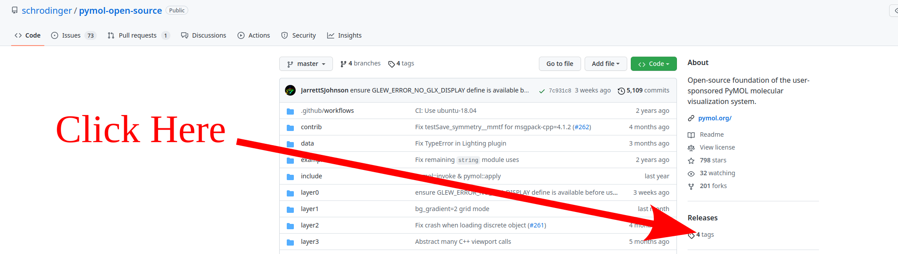
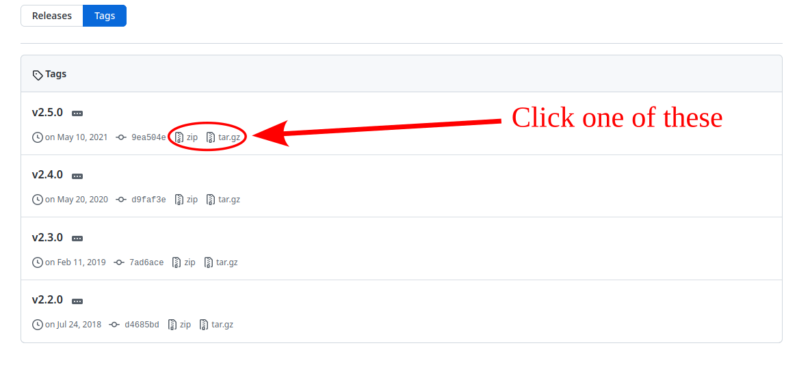
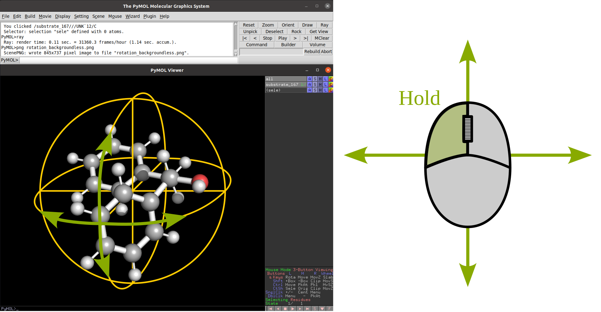
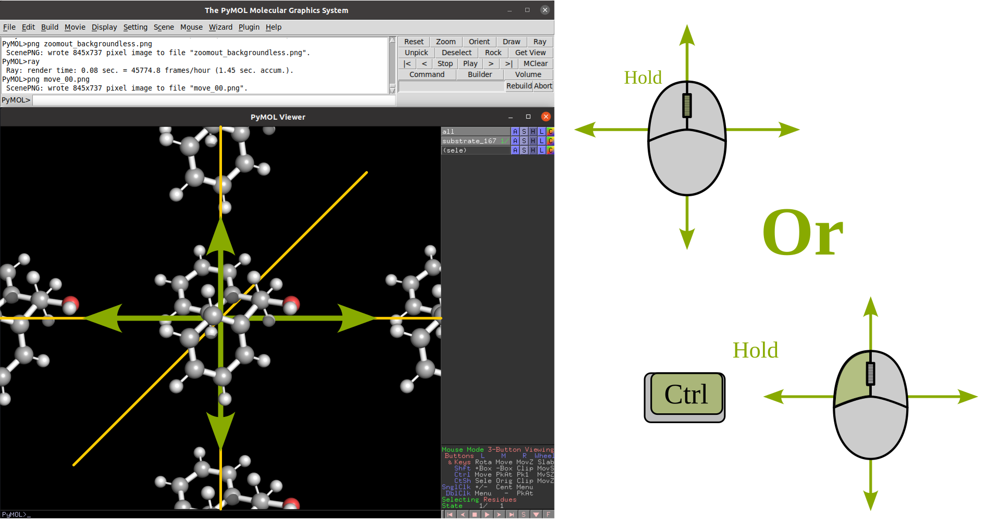
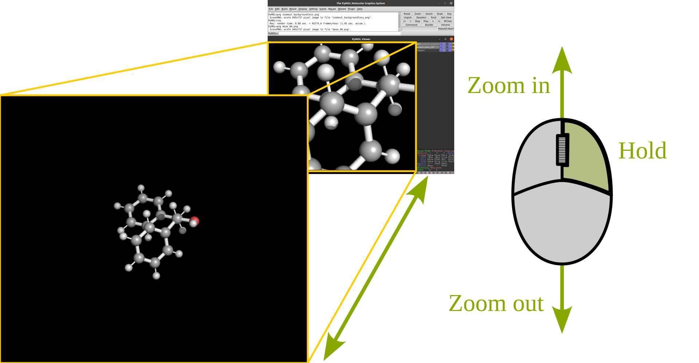
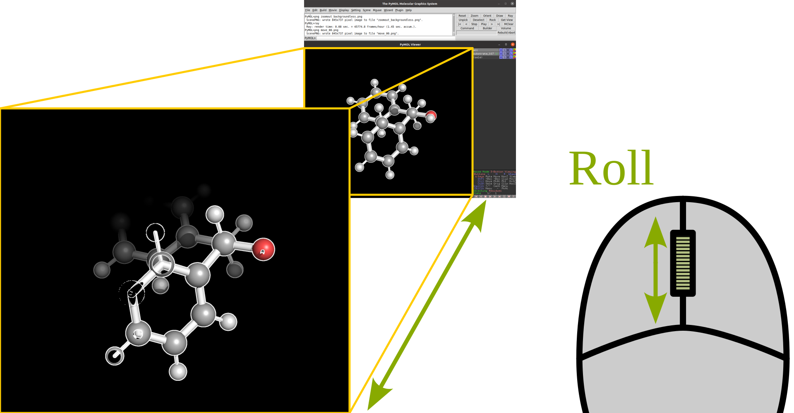
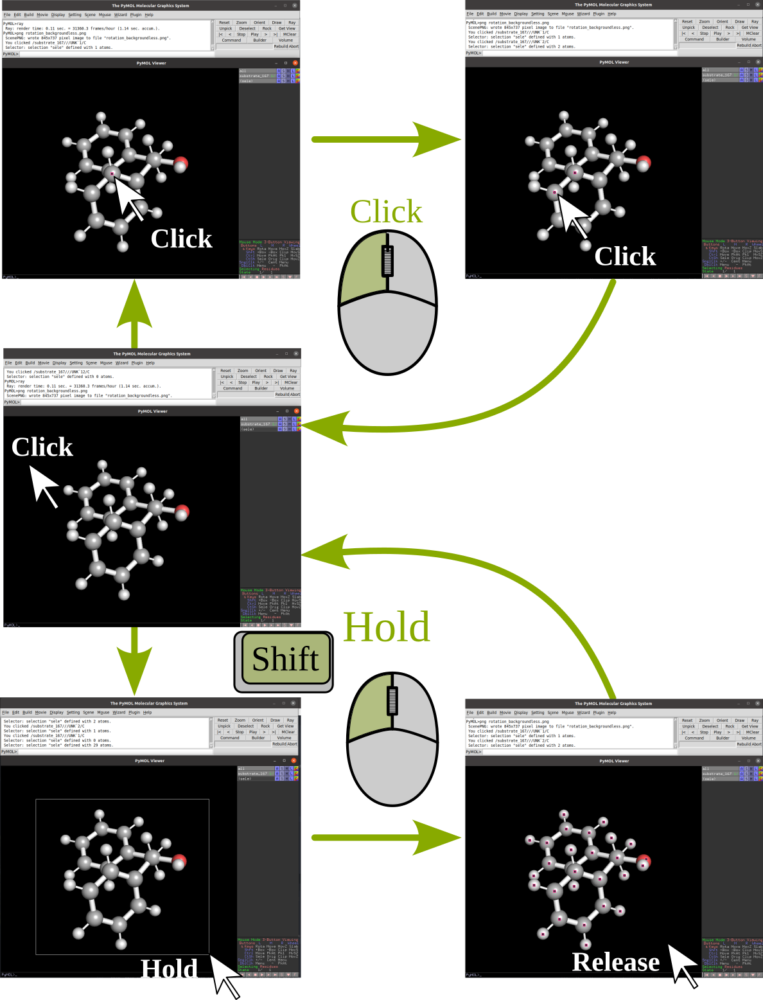
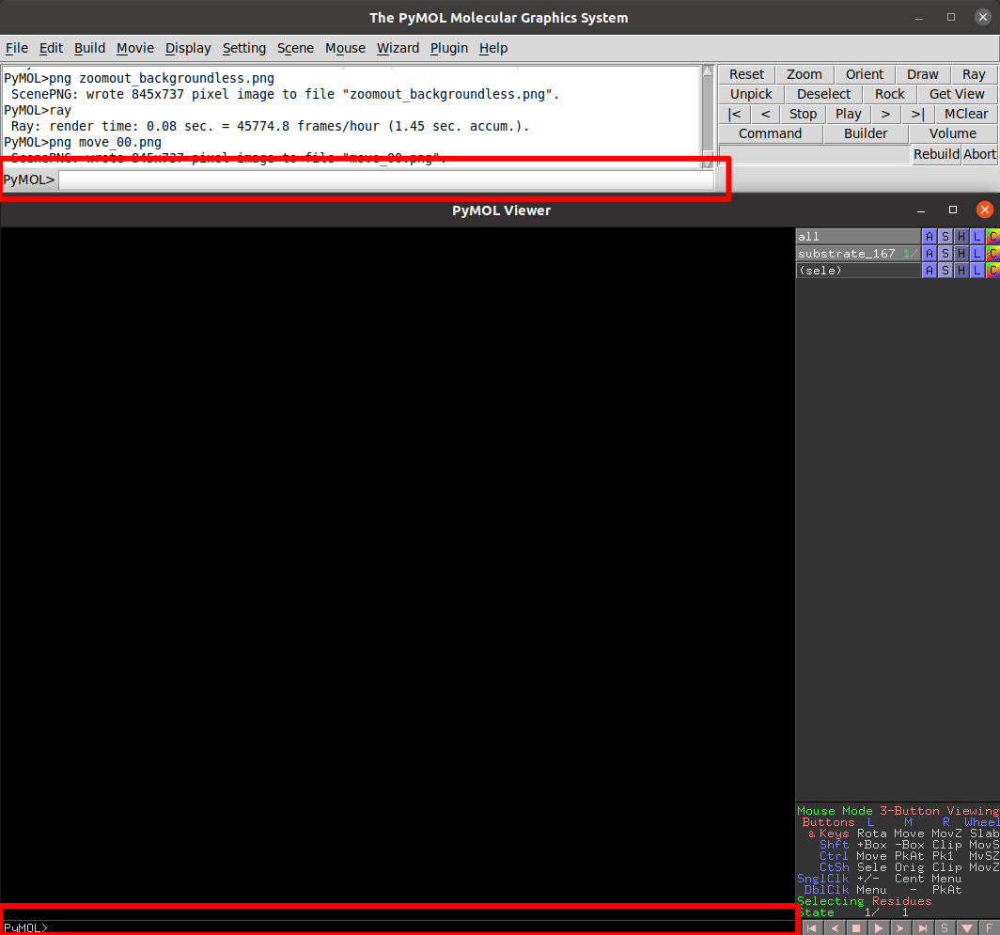
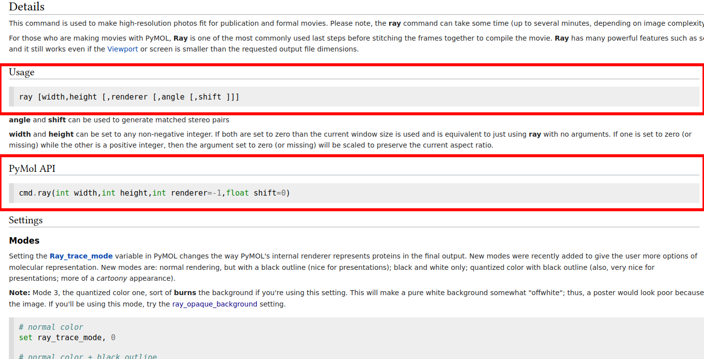

Pymol
Installation
We can install two flavors of Pymol, the "Free for academic use" and the "Open source". Here we will see how to set up a new conda environment with the appropriate libraries to compile the open source version of pymol.
Note
For the next steps it will be assumed that you use a UNIX-based OS. If you want to use windows... try to google "stackoverflow create a new conda environment in Windows".
First we open a new terminal and we create a new conda environment with python 3.8 and the python requisites:
conda create -n pymol python=3.8
or alternatively (we strongly encourage this one)
conda create -p path/to/venv/pymol python=3.8
After creating the environment we need to activate it.
conda activate pymol
or if you followed the encouraged creation:
conda activate path/to/venv/pymol
Next we are going to install some python packages using pip
python -m pip install wheel
python -m pip install pmw
Warning
Be careful pmw or in other words Python MegaWidgets is not
the same package as pwm or in other words password manager.
As pymol is not a pure python program, it does require some external libraries. As we might not have admin permissions to install the required libraries and programs system-wide we will install them in our conda environment:
conda install -c anaconda msgpack-python pyqt
conda install -c conda-forge glew freeglut libxml2 glm libpng hdf5 libnetcdf
Note
If you ever want to compile code using gcc, make, cmake, g++, ninja you will need to install them in a similar fashion in your conda environment (even if they are already available system-wide, otherwise the compilers will be unable to find the appropriate libraries of the conda environment)
Now we have the environment ready for compiling pymol. I usually have a folder in my home directory named 'compiled_software'. If you want to a different setup change the appropriate paths. We will create the folders where we will have the installation of pymol as well as the source code.
cd $HOME
cd compiled_software
mkdir pymol
Now we download the source code from the pymol github repository.
You can get whichever version you prefer. I do not recommend to download the current development code, but instead any of the released versions.

Now download your preferred release. Currently the "Free for academic use"
binary corresponds to the v2.4.0 version so we will proceed with the
latest release v2.5.0

Both .zip and .tar.gz correspond to compressed folders, so the next step that we will do is to uncompress the contents into $HOME/compiled_software/pymol/source and then we cd into the folder.
For zip:
unzip $HOME/Downloads/pymol-open-source-2.5.0.zip -d $HOME/compiled_software/pymol
mv $HOME/compiled_software/pymol/pymol-open-source-2.5.0 $HOME/compiled_software/pymol/source
cd $HOME/compiled_software/pymol/source
for tar:
cd $HOME/compiled_software/pymol
tar -xvzf $HOME/Downloads/pymol-open-source-2.5.0.tar.gz
mv pymol-open-source-2.5.0 source
cd source
Now we proceed to compile pymol
python setup.py install --prefix=$HOME/compiled_software/pymol/installation
Congrats! now you have sucessfully compiled pymol in your conda environment. Usually we could just add the path to the pymol binary to our PATH variable and we would be prepared. However if we don't have the environment active we will see pymol but it will crash inmediatly. What we are going to do is tweak our conda environment so that pymol will only be found when we are in this specific conda environment.
First we switch to the base conda environment and move to the folder where the files of our environment are.
Note
Yes, here's were you will be grateful of following the advice of creating the conda environment with the -p beacause it is the same path that you specified. Otherwise the files will be wherever your system hosts the base conda environment... and you shouldn't be modifying any of the files of the base environment in loki, falcon, fireball, buzzsaw, acme... unless you know what you are doing.
conda activate
cd path/to/venv/pymol
cd etc
Now we will create a conda folder so that we can have a custom setup of global environment variables specific for our conda environment.
mkdir conda
cd conda
mkdir activate.d deactivate.d
touch activate.d/env_vars.sh
touch deactivate.d/env_vars.sh
Use now your favorite text editor to write the following contents in activate.d/env_vars.sh:
#!/bin/sh
export MYOLDPATH=${PATH};
export PATH=${PATH}:${HOME}/compiled_software/pymol/installation/bin;
and in deactivate.d/env_vars.sh:
#!/bin/sh
export PATH=${MYOLDPATH};
unset MYOLDPATH;
Finally lets test that you can access pymol in your environment:
cd $HOME
conda activate path/to/venv/pymol
pymol --help
Pymol Basics
Basic controls
Rotation |
Translate |
 |
 |
Zoom |
Clip |
 |
 |
Selection |
 |
Basic commands
One of the first commands that we end up requiring when we are using pymol
is the command set_name. Giving names to atom selections allows us to
more easily change the representations of our molecules but the default name of
our selection when we use the mouse to select the atoms is sele.

We can type commands in any of the pymol command lines, I do recommend using the
top one, since pushing Esc in the bottom one will switch the view of our
molecule for a list of commands (We can easily go back by pressing the same button)
Here we will only need to type the command and the first parameter of the
command and any second, third or fourth parameter will be separated by a comma.
In the specific case of set_name:
PyMOL> set_name sele, fragment_A
Now we move to another of the most useful command-line commands of pymol,
select. As the name of the command hint it allows to create an atom
selection from the command line. This can be specially useful when we have a huge
quantity of atoms that we want to select. It is its own conditional language and
we a more detailed description in the
Selection Algebra section
of the pymol documentation.
Now as example we will select the atoms of our molecule that we did not select
previously and we will name that selection as fragment_B.
PyMOL> select fragment_B, all and not fragment_A
Now lets say that we want to visualize fragment_A using a VdW spheres
representation and fragment_B using a ball and stick model. We can do
that with the mouse using the appropriate menus, but let's do it with the
command line!
PyMOL> show spheres, fragment_A
PyMOL> preset.ball_and_stick('fragment_B')
Now lets create a new color (which we will call gurei) and color everything by atom with the carbons in
that specific color.
PyMOL> set_color gurey, [0.66,0.66,0.66]
PyMOL> util.cba('gurey')
Note
more information about coloring can be found in the color and Advanced coloring sections of the pymol wiki.
Now we are going to ray_trace our molecule. Ray-tracing a 3D model involves calculating and adding to the final figure the appropriate lighting and shadows of the 3D model. In other words, making your figure prettier than what it usually looks in the normal viewer.
PyMOL> ray
If we use ray by default the dimensions of the figure are going to be dependent on our screen and the size of the window where we are visualizing the molecule. If we want a higher resolution we have the option of buying a new screen with a really high resolution, resizing the window until the limits of our screen, or actually spend 30 seconds of our life understanding the syntax of the ray command in the pymol documentation. It's your choice! but as I'm very picky with my figures and you are reading my tutorial, lets behave like homo sapiens sapiens for once. We will render a figure of 800x600 px (width x height).
PyMOL> ray 800, 600
Great! now let me present to you the ray_trace_mode variable. If we change the value of this variable the type of rendering and ray-tracing of our molecule will change. It is very well documented in the pymol wiki but feel free to play with it a bit. Here's the syntax to change its value and ray-trace afterwards.
PyMOL> set ray_trace_mode, 1
PyMOL> ray 800, 600
After the ray trace, we can go to the File menu and export the image appropriatedly but what fun is it to do it with the mouse when we have arrived so far away using the command line? Let's write it instead!
PyMOL> png my_frankenstein_molecule.png
Hurray!
pymol scripts and command line rendering
Our next step in this journey is to translate everything that we did to a python script. You may wonder why? well I suggest you try to render a protein in cartoon mode with a 4000x4000 resolution.
As you curse me in the event that you actually attempted that, now you know why sometimes it is very usefull to run pymol without GUI. Especially when your group has some fairly powerfull computers (falcon, buzzsaw, fireball, loki...) and no one is using them at that moment
First let's show the syntax to run a python script with pymol through the command line without the GUI:
pymol -c -r path/to/my/python_script.py
Simple right? remember that the it will run in the foreground and as a consecuence it will lock your terminal until it finishes. If you want to run it in the background:
pymol -c -r path/to/my/python_script.py &
and if you want to be able to log out of the computer but maintain the process running:
nohup pymol -c -r path/to/my/python_script.py &
And now let's see how a python script that loads a molecule from a file, colors it by atom (with 'gurey' carbons) renders and saves it, looks like:
from pymol import cmd, stored, util
ifile = 'mymolecule.xyz' # .pse files can also be loaded
cmd.load(ifile)
cmd.do("preset.ball_and_stick('all')")
carbon_color = [0.666,0.666,0.666]
cmd.set_color('gurey',carbon_color)
util.cba('gurey','all')
width, height = 2751, 2286
cmd.ray(width,height)
cmd.png('mymolecule.png')
If you read the previous section, you can probably start tying things together and see how, in general, translating from pymol commands to their python counterpart can be relatively easy.
In case I might not have been clear enough regarding how well done the pymol documentation is written, let me insist on it. In the following picture we can see how beautifully and easily we can find the syntax in pymol as well as the syntax in python for the same pymol command with all their parameters explained.

Note
You might not believe it, but they happen to have a similar scheme for all their commands in the wiki. I know it's crazy right?? and even with such a wonderfully crafted documentation there is people who would rather enlarge the window to increase the quality of the rendered figure over checking the documentation. People are crazy!